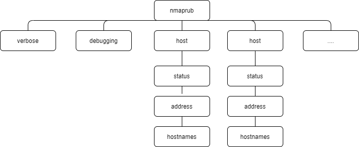
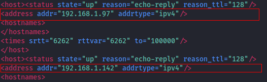

xml format
1. Run nmap
nmap -PE -sn -n 192.168.1.0/24 -oX upHosts.xml
cat upHosts
Tree structure of the xml output file (-oX)
 For each
host, we want to extract the
addr attribute (with ipv4 addrtype)
 2.Extract Ip addresses with Ruby script
./upHosts-xml.rb nmapresult.xml
DESCRIPTION
xpath
Line 13:
doc.elements.each("//host/address[@addrtype='ipv4']") do |addr|To reach the
address node of each host node we will use
xpath, and we can achieve this using two different strategies:
◇ /nmaprun/host/address[@addrtype='ipv4']
▪ we start from the root node
◇ //host/address[@addrtype='ipv4']
▪ we do not start from a root node. All of the times we find a host node we check the addrtype of the address
REXMLA common strategy is to parse a document by using REXML Document class. Like so we will have an object that stores the xml tree of the input file.
Line 9:
doc = REXML::Document.new File.new(ARGV[0])
upHosts-xml.rb
(ruby script)
#!/usr/bin/ruby
# require document class from rexml
require "rexml/document"
begin
# Input file is the first command argument. Document.new takes
# a File as input and parses its content as an xml tree
doc = REXML::Document.new File.new(ARGV[0])
# for each address node child of host node
# puts to stdout the addr attribute
doc.elements.each("//host/address[@addrtype='ipv4']") do |addr|
puts addr.attributes["addr"]
end
rescue Exception => e
puts e
end